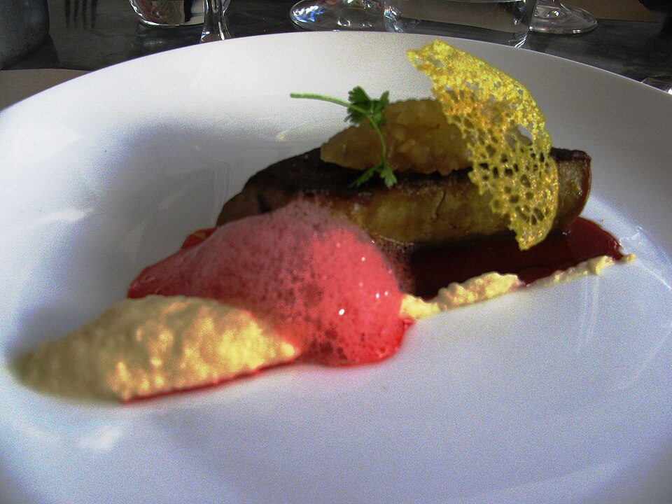

Carnes · Outros
Escalope de foie gras com maçã verde glaçada

Ingredientes
- 320 g de escalope de foie gras
- Sal e pimenta
- 50 g de manteiga sem sal + 50 g de açúcar + 1 maçã verde em fatias finas
- 100 g de manteiga trufada, 50 ml de aceto balsâmico, 30 g de açúcar (molho)
- 1 alho-poró em tiras finas, 500 ml de óleo de soja
- 30 g de pistache triturado
Modo de preparo
- Grelhe o foie gras temperado ~3 minutos de cada lado.
- Glaceie a maçã na manteiga com açúcar. Bata a manteiga trufada com balsâmico e açúcar; reduza e tempere.
- Frite o alho-poró. Monte com vazador: maçã + escalope; espalhe molho, pistache e alho-poró crocante.